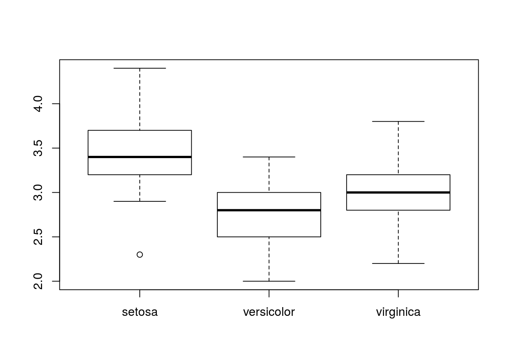
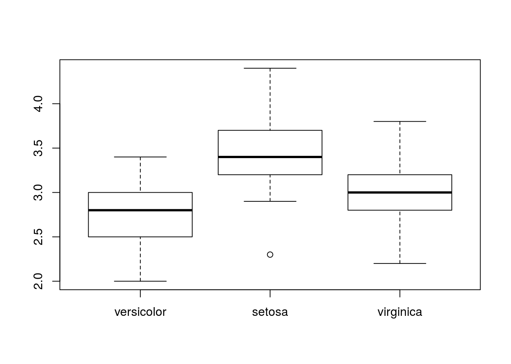
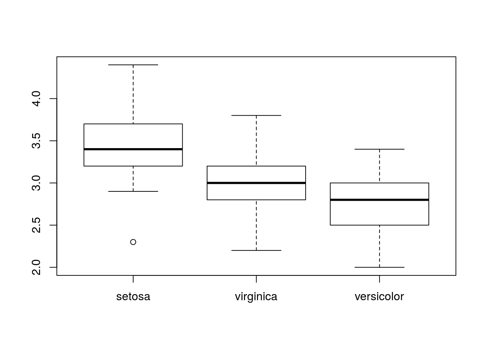
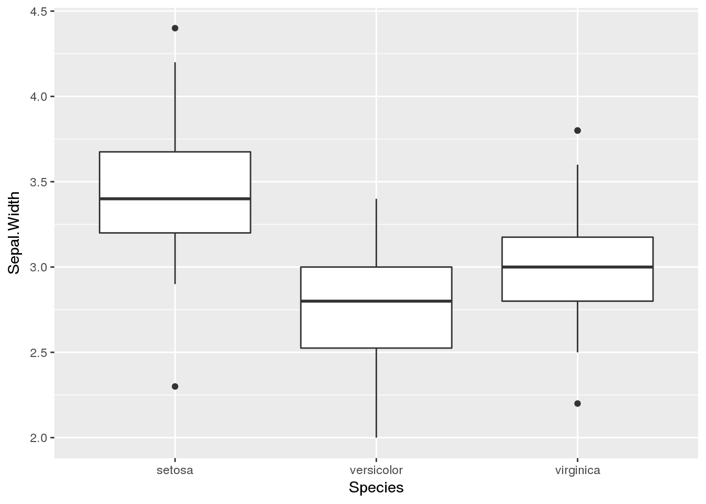
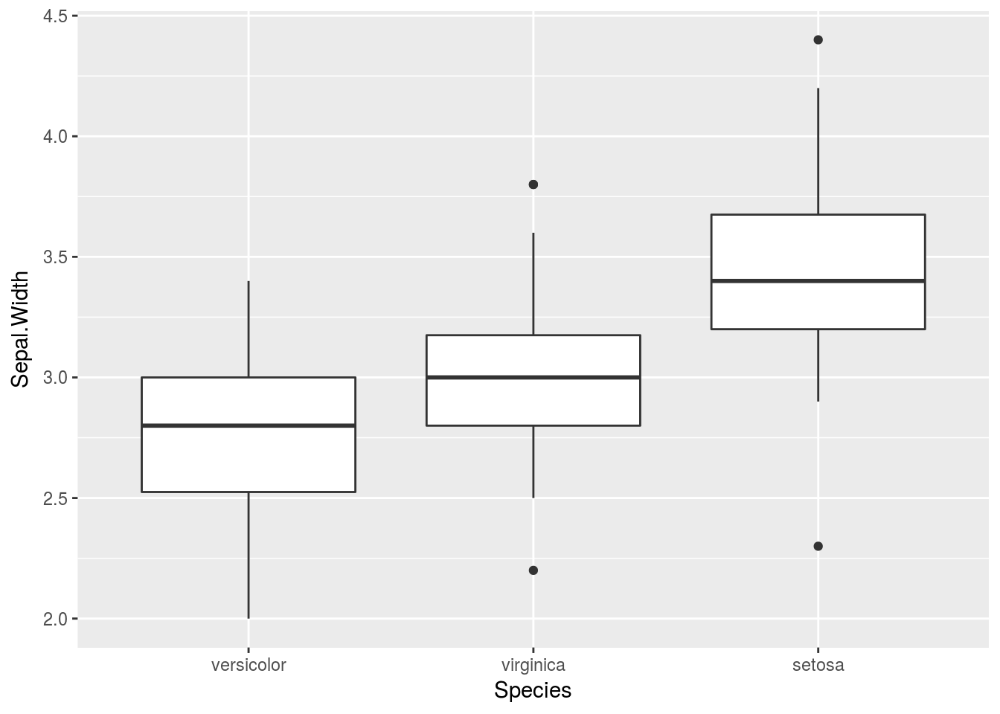
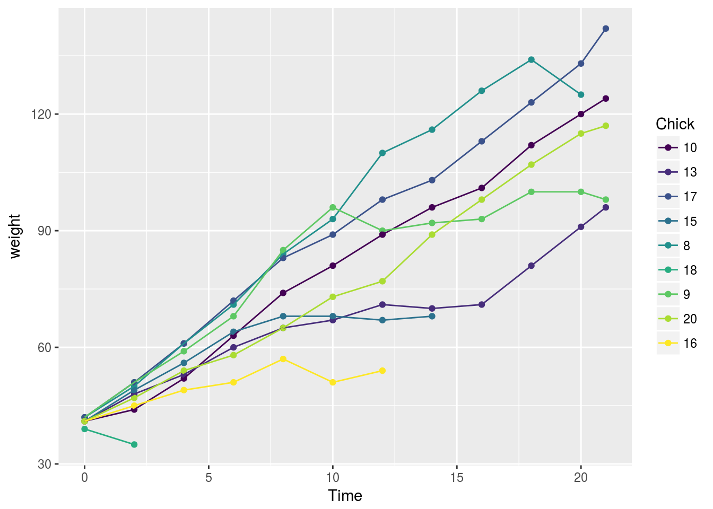

{forcats}パッケージでカテゴリカル変数(factor型データ)をいじってみる
tidyverseパッケージ群のひとつで，カテゴリカル変数(Factor型データ)をいじるのに特化したものとしてforcatsパッケージがあります。開発の経緯や詳細はパッケージの公式サイト，および「R for Data Science」のFactorsの章をご覧ください:
今回は，公式サイトの関数リファレンスを参考に，自分向けのメモがてらテストします。
インストール
CRANに登録済み。また，tidyverseパッケージ群なのでtidyverseをインストールすることでも可能。
# {tidyverse}をインストールすれば自動的にインストールされます:
install.packages("tidyverse")
# もちろん，単独でもOK:
install.packages("forcats")
# 開発版が欲しい時はGitHubから:
# install.packages("devtools")
devtools::install_github("tidyverse")
# もちろん{githubinstall}でもOK
# hadrey版とtidyverse版がありますが，たぶんtidyverse版の方がいいかと:
# install.packages("githubinstall")
githubinstall::githubinstall("forcats")パッケージの読み込み
tidyverseパッケージ群ですが，library(tidyverse)だけでは読み込みません。でもおそらくはそれらを利用することでしょうから，あわせて読み込んでおくといいかと。
library(tidyverse)
library(forcats)関数一覧のチェック
exportされている関数をチェック。
ls("package:forcats")
#> [1] "%>%" "as_factor" "fct_anon"
#> [4] "fct_c" "fct_collapse" "fct_count"
#> [7] "fct_drop" "fct_expand" "fct_explicit_na"
#> [10] "fct_infreq" "fct_inorder" "fct_lump"
#> [13] "fct_other" "fct_recode" "fct_relabel"
#> [16] "fct_relevel" "fct_reorder" "fct_reorder2"
#> [19] "fct_rev" "fct_shift" "fct_shuffle"
#> [22] "fct_unify" "fct_unique" "gss_cat"
#> [25] "lvls_expand" "lvls_reorder" "lvls_revalue"
#> [28] "lvls_union"関数のリファレンスは，公式サイトのこちらに一覧と説明があります。
使用するデータ
簡単なものについては，その場でさくっと作ります。
大きめのデータでやりたいときは，forcatsパッケージに内包されているgss_catデータを使ってます。データの内容については?gss_catで表示されるヘルプを確認してください。
gss_cat
#> # A tibble: 21,483 × 9
#> year marital age race rincome partyid
#> <int> <fctr> <int> <fctr> <fctr> <fctr>
#> 1 2000 Never married 26 White $8000 to 9999 Ind,near rep
#> 2 2000 Divorced 48 White $8000 to 9999 Not str republican
#> 3 2000 Widowed 67 White Not applicable Independent
#> 4 2000 Never married 39 White Not applicable Ind,near rep
#> 5 2000 Divorced 25 White Not applicable Not str democrat
#> 6 2000 Married 25 White $20000 - 24999 Strong democrat
#> 7 2000 Never married 36 White $25000 or more Not str republican
#> 8 2000 Divorced 44 White $7000 to 7999 Ind,near dem
#> 9 2000 Married 44 White $25000 or more Not str democrat
#> 10 2000 Married 47 White $25000 or more Strong republican
#> # ... with 21,473 more rows, and 3 more variables: relig <fctr>,
#> # denom <fctr>, tvhours <int>
names(gss_cat)
#> [1] "year" "marital" "age" "race" "rincome" "partyid" "relig"
#> [8] "denom" "tvhours"factorのorderを変更
factorに設定してあるlevelsはそのままで，順序(order)を変更します。モデリングや表，可視化において効果を発揮します。
登場順でfactorのlevelsを再整理(fct_inorder)
いわゆる“出てきた順”でlevelsのorderを設定するには，fct_inorder()関数を使用します
使い方
fct_inorder(f)引数
- f
factor型のデータ。levelsを並べ替えたいデータを指定してください。
説明と具体例
そのまんまで，引数に指定したfactor型データのレベルを，要素が出てきた順にします。
f <- factor(c("b", "b", "a", "c", "c", "c"))
f
#> [1] b b a c c c
#> Levels: a b c
fct_inorder(f)
#> [1] b b a c c c
#> Levels: b a c登場頻度順でfactorのlevelsを再整理(fct_infreq)
データ内で出てきた“頻度が多い順”でlevelsのorderを設定するには，fct_infreq()関数を使用します。
使い方
fct_infreq(f)引数
- f
- factor型のデータ。levelsを並べ替えたいデータを指定してください。
説明と具体例
そのまんまで，引数に指定したfactor型データのレベルを，要素が出てきた順にします。
f <- factor(c("b", "b", "a", "c", "c", "c"))
f
#> [1] b b a c c c
#> Levels: a b c
fct_infreq(f)
#> [1] b b a c c c
#> Levels: c b a手作業でfactorのlevelsを再整理(fct_relevel)
levelsの順番を，手作業で並べ替えます。
使い方
fct_relevel(f, ...)引数
- f
- factor型のデータ。levelsを並べ替えたいベクトルを指定してください。
- …
- 文字列ベクトルを指定。指定した値を，levelsの左側(先頭)へ持って行き，それ以外は後ろへシフトします。
説明と具体例
要するにbase::relevel()のラッパーで，...の部分で指定した値を前に持ってくるようになります。なお，全ての要素を準備してわざわざ指定しなくても，指定しなかった要素は自動的に後ろへそのままシフトします。
f <- factor(c("a", "b", "c"))
fct_relevel(f)
#> [1] a b c
#> Levels: a b c
fct_relevel(f, "c")
#> [1] a b c
#> Levels: c a b
fct_relevel(f, "b", "a")
#> [1] a b c
#> Levels: b a cまた，存在しないlevelsの値を指定すると警告が出て，その要素は無視されます。
fct_relevel(f, "d")
#> Warning: Unknown levels in `f`: d
#> [1] a b c
#> Levels: a b c
fct_relevel(f, "b", "d")
#> Warning: Unknown levels in `f`: d
#> [1] a b c
#> Levels: b a c
fct_relevel(f, "d", "b")
#> Warning: Unknown levels in `f`: d
#> [1] a b c
#> Levels: b a c他の1変数に従ってソートするようlevelsを再整列(fct_reorder)
他の変数を使って，levelsをソートします。例えば「各カテゴリでのxの中央値を使い，その降順になるようにlevelsをソートしたい」という時に使います。
使い方
fct_reorder(f, x, fun = median, ..., .desc = FALSE)引数
- f
- factor型のベクトル。
- x
- 並べ替えの基準に利用する変数。この変数を下の
funで指定する集計用関数にあてた結果をソートに利用します。 - fun
- 集計用関数を指定。デフォルトでは
median。なお返り値が単一ベクトルになるものでなければいけません。 - …
funに送る他の引数をここで指定します。よくあるのはna.rm = TRUEなどです。- .desc
- 論理値を指定。降順/昇順を指定します。デフォルトは
FALSEで昇順。
説明と具体例
1次元データでのグラフを描くときや，集計表を作成するときに効果を発揮するでしょう。例えば，以下のようなパターンを想定します:
boxplot(Sepal.Width ~ Species, data = iris)
ここで，「Sepal.Widthの大きさの順番でX軸を並べ替えたい」時に，以下のように使います:
boxplot(Sepal.Width ~ fct_reorder(Species, Sepal.Width), data = iris)
また，デフォルトでは中央値を使っていますが，変更も可能です:
boxplot(Sepal.Width ~ fct_reorder(Species, Sepal.Width, fun = sample, size = 1), data = iris)
もし，降順にしたい場合は，以下のように当ててください:
boxplot(Sepal.Width ~ fct_reorder(Species, Sepal.Width, .desc = TRUE), data = iris)
これらはもちろんggplot2でも有効です。以下のようなパターンを想定します:
library(ggplot2)
ggplot(iris, aes(Species, Sepal.Width)) +
geom_boxplot()
先ほどと同様に変更します:
ggplot(iris, aes(fct_reorder(Species, Sepal.Width), Sepal.Width)) +
geom_boxplot() +
labs(x = "Species")
なお，2変数をキーとする場合は，fct_reorder2を使います。
他の2変数に従ってソートするようlevelsを再整列(fct_reorder2)
他の変数を使って，levelsをソートします。fct_reorderとの違いは，ソートに利用する変数が2つだという点です。
使い方
fct_reorder2(f, x, y, fun = last2, ..., .desc = FALSE)引数
- f
- factor型のベクトル。
- x, y
- 並べ替えの基準に利用する変数。この変数を下の
funで指定する集計用関数にあてた結果をソートに利用します。 - fun
- 集計用関数を指定。デフォルトに設定してある
last2はこのパッケージ内にある関数(後述)。 - …
funに送る他の引数をここで指定します。よくあるのはna.rm = TRUEなどです。- .desc
- 論理値を指定。降順/昇順を指定します。デフォルトは
FALSEで降順。
説明と具体例
基本的な考え方はfct_reorderと同様です。
なお，引数funのデフォルトに設定しているlast2という関数は，以下のように定義してあります:
last2 <- function(x, y) {
y[order(x, na.last = FALSE)][length(y)]
}つまりxの昇順に従ってyをソートし，それの一番下の要素を返すという関数です1。これを各factorの要素ごとにtapplyして求めた値を使い，levelsの値を並べ替えています。もちろんmedianやmeanなどの関数を当てることも可能です。
これが最も効果を発揮するのは，凡例に当てているカテゴリカル変数をソートしたい時などでしょう。例えば，以下のようなパターンを想定します:
chks <- subset(ChickWeight, as.integer(Chick) < 10)
chks <- transform(chks, Chick = fct_shuffle(Chick))
ggplot(chks, aes(Time, weight, colour = Chick)) +
geom_point() +
geom_line()
凡例のところを見ると，データのlevels設定そのままに順序が決定されており，グラフに描かれているのとマッチングがしにくくなります。
そこで，Times(x軸)とweight(y軸)の大きい要素に対応するようChick(color要素，凡例のこと)のlevelsを設定します:
ggplot(chks, aes(Time, weight, colour = fct_reorder2(Chick, Time, weight))) +
geom_point() +
geom_line() +
labs(colour = "Chick")
各系列(factorの各levels)の一番右の要素を用いて，降順になるようlevelsが並べ替えられます。
levelsの順序を反転(fct_rev)
順序を反転させます。
使い方
fct_rev(f)引数
- f
- factor型のベクトル。
説明と具体例
タイトルのとおりです。factor型データを利用したプロットで使えるでしょう。
f <- factor(c("a", "b", "c"))
fct_rev(f)
#> [1] a b c
#> Levels: c b a順序付きfactorデータのlevelsの順序をずらす(fct_shift)
順序付きfactorデータで，そのlevelsをずらしていきます。回転するイメージです。
使い方
fct_shift(f, n = 1L)
引数
- f
- factor型のベクトル。
- n
- ずらす(回転させる)数。正の値なら左へシフトし，負の値なら右へシフトします。
説明と具体例
例えば曜日名や月名など，循環するような場合に効果を発揮します。たとえば，以下のようなデータを想定します:
x <- factor(
c("Mon", "Tue", "Wed"),
levels = c("Sun", "Mon", "Tue", "Wed", "Thu", "Fri", "Sat"),
ordered = TRUE
)
x
#> [1] Mon Tue Wed
#> Levels: Sun < Mon < Tue < Wed < Thu < Fri < Satこれを，一つ左へずらしてみます:
fct_shift(x)
#> [1] Mon Tue Wed
#> Levels: Mon < Tue < Wed < Thu < Fri < Sat < Sunずらしたい数を指定することも可能です:
fct_shift(x, n = 2)
#> [1] Mon Tue Wed
#> Levels: Tue < Wed < Thu < Fri < Sat < Sun < Mon左ではなく右へずらす場合は，負の値にします:
fct_shift(x, n = -2)
#> [1] Mon Tue Wed
#> Levels: Fri < Sat < Sun < Mon < Tue < Wed < Thu順番をシャッフル(fct_shuffle)
シャッフルします。
使い方
fct_shuffle(f)引数
- f
- factor型のベクトル
説明と具体例
levelsの値をシャッフルします。元のデータ値はシャッフルされません。
f <- factor(c("a", "b", "c"))
fct_shuffle(f)
#> [1] a b c
#> Levels: b a c
fct_shuffle(f)
#> [1] a b c
#> Levels: c a bfactorのlevelsの値を変更
順番を(可能な限り)保持したまま，levelsの値を変更させます。
factorのlevelsの値を匿名化(fct_anon)
levelsの値を適当な連番にランダムに置換して，元のがlevelsの値をわからないようにします。
使い方
fct_anon(f, prefix = "")引数
- f
- factor型のベクトル。
- prefix
- ランダムなラベルの前に付与する文字列。
説明と具体例
上記のとおりです。なおlevelsの値も元々のlevelsのorderも保持されません。「factorのlevelsをちょっとそのままでは出せないなぁ」という時に活用できます。
たとえば，以下のようなデータを想定します:
gss_cat$relig %>% fct_count()
#> # A tibble: 16 × 2
#> f n
#> <fctr> <int>
#> 1 No answer 93
#> 2 Don't know 15
#> 3 Inter-nondenominational 109
#> 4 Native american 23
#> 5 Christian 689
#> 6 Orthodox-christian 95
#> 7 Moslem/islam 104
#> 8 Other eastern 32
#> 9 Hinduism 71
#> 10 Buddhism 147
#> 11 Other 224
#> 12 None 3523
#> 13 Jewish 388
#> 14 Catholic 5124
#> 15 Protestant 10846
#> 16 Not applicable 0これに対し，fct_anon()を挟むとこうなります:
gss_cat$relig %>% fct_anon() %>% fct_count()
#> # A tibble: 16 × 2
#> f n
#> <fctr> <int>
#> 1 01 32
#> 2 02 10846
#> 3 03 3523
#> 4 04 689
#> 5 05 95
#> 6 06 109
#> 7 07 5124
#> 8 08 388
#> 9 09 224
#> 10 10 147
#> 11 11 0
#> 12 12 93
#> 13 13 104
#> 14 14 23
#> 15 15 71
#> 16 16 15このように，levelsの値が連番の数値に書き換えられたというのが解ると思います。また，カウント数を比較してもらえばわかるように，その連番の与え方はランダムになっています。
なお，連番の前に好きな文字列をつけることが可能です:
gss_cat$relig %>% fct_anon("kosaki") %>% fct_count()
#> # A tibble: 16 × 2
#> f n
#> <fctr> <int>
#> 1 kosaki01 109
#> 2 kosaki02 224
#> 3 kosaki03 95
#> 4 kosaki04 5124
#> 5 kosaki05 23
#> 6 kosaki06 689
#> 7 kosaki07 147
#> 8 kosaki08 10846
#> 9 kosaki09 32
#> 10 kosaki10 15
#> 11 kosaki11 104
#> 12 kosaki12 0
#> 13 kosaki13 93
#> 14 kosaki14 388
#> 15 kosaki15 71
#> 16 kosaki16 3523factorのlevelsを手動で落とし込み(fct_collapse)
自分で定義したlevelsのグループへ，factorの値を落とし込みします。
使い方
fct_collapse(f, ...)引数
- f
- factor型のベクトル
- …
- 名前付きベクトルのシリーズ。それぞれのベクトル内にあるlevelsの値が，指定したものへと置換されます。
説明と具体例
要するに，「複数のlevelsをまとめて一つのlevelsになるようにまとめていく」ことをしてくれます。たとえば，以下のようなデータを想定します:
fct_count(gss_cat$partyid)
#> # A tibble: 10 × 2
#> f n
#> <fctr> <int>
#> 1 No answer 154
#> 2 Don't know 1
#> 3 Other party 393
#> 4 Strong republican 2314
#> 5 Not str republican 3032
#> 6 Ind,near rep 1791
#> 7 Independent 4119
#> 8 Ind,near dem 2499
#> 9 Not str democrat 3690
#> 10 Strong democrat 3490現在10のlevelsがあります。これを5つにまとめていきます:
partyid2 <- fct_collapse(gss_cat$partyid,
missing = c("No answer", "Don't know"),
other = "Other party",
rep = c("Strong republican", "Not str republican"),
ind = c("Ind,near rep", "Independent", "Ind,near dem"),
dem = c("Not str democrat", "Strong democrat")
)
fct_count(partyid2)
#> # A tibble: 5 × 2
#> f n
#> <fctr> <int>
#> 1 missing 155
#> 2 other 393
#> 3 rep 5346
#> 4 ind 8409
#> 5 dem 7180このようになります。なお，もちろんこの処理により新たに振り分けたlevelsの値へと実際の値も変換されますので注意してください。
head(partyid2)
#> [1] ind rep ind ind dem dem
#> Levels: missing other rep ind dem小さい/大きいlevels項目をotherに固める(fct_lump)
上位あるいは下位の要素を，「other(その他)」と塊(lump)にくくります。
使い方
fct_lump(f, n, prop, other_level = "Other", ties.method = c("min","average", "first", "last", "random", "max"))引数
- f
- factor型のベクトル
- n, prop
nは，その他(other)にしない残すlevels数を指定します。正の値であれば，メジャーなlevelsをabs(n)だけ残し，負の値であれば，マイナーなlevelsをabs(n)だけ残します。
propは，その他(other)にするlevelsのカットポイント比率を指定します。各levelsの発生数/全発生数を算出し，それとpropで指定した比率とを比較していきます。
正の値であれば，構成比率がカットポイント(prop)より低いlevelsを全て“Other”にし，負の値であれば，カットポイントを反転させた正の値(-prep)より構成比率が大きいlevelsを全て“Other”にします。- other_level
- その他(Other)に設定するlevelsの値。
- ties.method
- 頻度が同値のlevelsについてどのようなmethodを用いてランク付けするかを文字列で指定します。詳しくは
?base::rankを参照。
説明と具体例
要するに，「細かいのは全て“その他”にしてしまおう」というのを実現するものです。以下のようなデータを想定します:
x <- factor(letters[rpois(100, 5)])
x
#> [1] d b f f e e e d g f g c e e d f f f g f g f d e e b a e e c e c d d a
#> [36] a b c h c d f c e e d e e f d d a e b b e b f e e h e e d i g h g e e
#> [71] d d d e d c a g h c d k d g g g e g e d e d d g g c b k
#> Levels: a b c d e f g h i k
table(x)
#> x
#> a b c d e f g h i k
#> 5 7 9 20 26 11 13 4 1 2このxに，fct_lump()をあてると以下のようになります:
fct_lump(x)
#> [1] d b f f e e e d g f g
#> [12] c e e d f f f g f g f
#> [23] d e e b a e e c e c d
#> [34] d a a b c h c d f c e
#> [45] e d e e f d d a e b b
#> [56] e b f e e h e e d Other g
#> [67] h g e e d d d e d c a
#> [78] g h c d Other d g g g e g
#> [89] e d e d d g g c b Other
#> Levels: a b c d e f g h Other
table(fct_lump(x))
#>
#> a b c d e f g h Other
#> 5 7 9 20 26 11 13 4 3このように，少数の発生数しかないlevelsはOtherへとまとめられます。なお，まとめられたOtherはlevelsで一番後ろになります。
まとめる基準についてですが，デフォルトでは，Otherにまとめた際に，Otherが各レベルで最小となるように，自動でカットポイントが設定されます。上のパターンの場合，Otherの次に大きいのを取り込んでしまうと，Otherが一番小さくならないためにここでストップしています。
引数にあるnを指定することで，残すlevels数を指定することができます。正の値を指定すると，頻度順で大きい方からn個残して，残りをOtherにまとめます:
fct_lump(x, n = 3)
#> [1] d Other Other Other e e e d g Other g
#> [12] Other e e d Other Other Other g Other g Other
#> [23] d e e Other Other e e Other e Other d
#> [34] d Other Other Other Other Other Other d Other Other e
#> [45] e d e e Other d d Other e Other Other
#> [56] e Other Other e e Other e e d Other g
#> [67] Other g e e d d d e d Other Other
#> [78] g Other Other d Other d g g g e g
#> [89] e d e d d g g Other Other Other
#> Levels: d e g Other
table(fct_lump(x, n = 3))
#>
#> d e g Other
#> 20 26 13 39ここでnに負の値を指定すると，頻度順で小さい方からn個残して，残りをOtherにまとめます:
fct_lump(x, n = -3)
#> [1] Other Other Other Other Other Other Other Other Other Other Other
#> [12] Other Other Other Other Other Other Other Other Other Other Other
#> [23] Other Other Other Other Other Other Other Other Other Other Other
#> [34] Other Other Other Other Other h Other Other Other Other Other
#> [45] Other Other Other Other Other Other Other Other Other Other Other
#> [56] Other Other Other Other Other h Other Other Other i Other
#> [67] h Other Other Other Other Other Other Other Other Other Other
#> [78] Other h Other Other k Other Other Other Other Other Other
#> [89] Other Other Other Other Other Other Other Other Other k
#> Levels: h i k Other
table(fct_lump(x, n = -3))
#>
#> h i k Other
#> 4 1 2 91このように個数でカットポイントを指定するのではなく，発生確率でカットポイントを指定するには引数propを利用します。まず，各levelsの発生数/全発生数でlevelsごとの発生確率が算出され，それとpropで指定した確率とを比較してジャッジします:
# 参考までに発生確率を算出
kosaki <- table(x)
kosaki/sum(kosaki)
#> x
#> a b c d e f
#> 0.05102041 0.07142857 0.09183673 0.20408163 0.26530612 0.11224490
#> g h i k
#> 0.13265306 0.04081633 0.01020408 0.02040816ここで，カットポイントとしてprop = 0.1を指定すると，発生確率が0.1以下のlevelsを全てOtherにまとめます:
# propを使ってまとめる
fct_lump(x, prop = 0.1)
#> [1] d Other f f e e e d g f g
#> [12] Other e e d f f f g f g f
#> [23] d e e Other Other e e Other e Other d
#> [34] d Other Other Other Other Other Other d f Other e
#> [45] e d e e f d d Other e Other Other
#> [56] e Other f e e Other e e d Other g
#> [67] Other g e e d d d e d Other Other
#> [78] g Other Other d Other d g g g e g
#> [89] e d e d d g g Other Other Other
#> Levels: d e f g Other
table(fct_lump(x, prop = 0.1))
#>
#> d e f g Other
#> 20 26 11 13 28また，このprepに負の値を指定すると，(正の値へ変換した)カットポイントの確率より大きいものを全てOtherにまとめます:
fct_lump(x, prop = -0.1)
#> [1] Other b Other Other Other Other Other Other Other Other Other
#> [12] c Other Other Other Other Other Other Other Other Other Other
#> [23] Other Other Other b a Other Other c Other c Other
#> [34] Other a a b c h c Other Other c Other
#> [45] Other Other Other Other Other Other Other a Other b b
#> [56] Other b Other Other Other h Other Other Other i Other
#> [67] h Other Other Other Other Other Other Other Other c a
#> [78] Other h c Other k Other Other Other Other Other Other
#> [89] Other Other Other Other Other Other Other c b k
#> Levels: a b c h i k Other
table(fct_lump(x, prop = -0.1))
#>
#> a b c h i k Other
#> 5 7 9 4 1 2 70nとpropの両方を指定した場合，ソースコードを見る限りnを優先して処理するようです(2017/01/13現在)。
もし発生頻度が同一のlevelsがある場合，ties.methodにてランク付けmethodを指定できます。これはbase::rank()に従いますので，そちらを参照してください。
なお，“Other”のlevelsの値はother_levelsにて指定できます。
factorのlevelsの値を手動で変更(fct_recode)
levelsの各値を手動で変更します。
使い方
fct_recode(f, ...)引数
- f
- factor型のベクトル
- …
- 新しく設定するlevels値を名前付き文字列ベクトルで指定。
説明と具体例
そのままです:
x <- factor(c("apple", "bear", "banana", "dear"))
fct_recode(x, fruit = "apple", fruit = "banana")
#> [1] fruit bear fruit dear
#> Levels: fruit bear dearなお存在しないlevels値を使用すると警告が出て，その部分は無視されます:
fct_recode(x, fruit = "apple", fruit = "bananana")
#> Warning: Unknown levels in `f`: bananana
#> [1] fruit bear banana dear
#> Levels: fruit banana bear dearまた，新しいlevels値にNULLを指定すると，そのレベルが削除されて値も削除されます:
fct_recode(x, NULL = "apple", fruit = "banana")
#> [1] <NA> bear fruit dear
#> Levels: fruit bear dear新しいlevelsを追加
新しいlevelsの値を追加します。
factorにlevelsを追加(fct_expand)
そのまんまです。
使い方
fct_expand(f, ...)
引数
- f
- factor型のベクトル。
- …
- 追加したいlevels値を文字列で指定。
説明と具体例
そのまんまです。
f <- factor(sample(letters[1:3], 20, replace = TRUE))
f
#> [1] b a c a c b b b b b a a b c a b a c a b
#> Levels: a b c
fct_expand(f, "d", "e", "f")
#> [1] b a c a c b b b b b a a b c a b a c a b
#> Levels: a b c d e f
fct_expand(f, letters[1:6])
#> [1] b a c a c b b b b b a a b c a b a c a b
#> Levels: a b c d e fNAに“欠損値”というlevelsを付与(fct_explicit_na)
factor型データ内にNAが存在する場合，その値に“(Missing)”というlevels値をつけます。
使い方
fct_explicit_na(f, na_level = "(Missing)")引数
- f
- factor型のベクトル。
- na_level
NAに設定するlevels値
説明と具体例
NAは通常levelsがうまく付与することができなかったりします:
f1 <- factor(c("a", "a", NA, NA, "a", "b", NA, "c", "a", "c", "b"))
f1
#> [1] a a <NA> <NA> a b <NA> c a c b
#> Levels: a b c
table(f1)
#> f1
#> a b c
#> 4 2 2この関数は，そんなNAに明示的にlevelsの値を振れるようにするものです:
f2 <- fct_explicit_na(f1)
f2
#> [1] a a (Missing) (Missing) a b (Missing)
#> [8] c a c b
#> Levels: a b c (Missing)
table(f2)
#> f2
#> a b c (Missing)
#> 4 2 2 3要するに，「NAを別の文字列に置換して，そのままlevelsの値に設定する」という処理を行ってくれます。
その他
複数のfactorデータを連結してlevelsを結合(fct_c)
複数のfactor型データをまとめたlistデータの内部を参照し，それを連結させてlevelsも結合させます。
使い方
fct_c(fs)引数
- fs
- factor型ベクトルを束ねたlist型データ
説明と具体例
タイトルのとおりで，自動的にいい感じにまとめてくれます:
fs <- list(factor("a"), factor("b"), factor(c("a", "b")))
fct_c(fs)
#> [1] a b a b
#> Levels: a bfactorの各要素の出現数をカウント(fct_count)
タイトルのとおりで，factor型に特化したcount関数です。
使い方
fct_count(f, sort = FALSE)
引数
- f
- factor型のベクトル
- sort
TRUEを指定すると，頻度の降順でソートします。
説明と具体例
タイトルのとおりですが，返り値がtibbleclassなのが特徴です。tableと違い，tidyverseな他の関数との相性がよく，使いやすいでしょう。
f <- factor(sample(letters)[rpois(1000, 10)])
table(f)
#> f
#> a b d e f g h i j k l m n o q s u v
#> 33 1 82 130 37 14 51 10 46 12 79 1 43 7 8 90 1 112
#> w x y z
#> 4 108 129 2
fct_count(f)
#> # A tibble: 22 × 2
#> f n
#> <fctr> <int>
#> 1 a 33
#> 2 b 1
#> 3 d 82
#> 4 e 130
#> 5 f 37
#> 6 g 14
#> 7 h 51
#> 8 i 10
#> 9 j 46
#> 10 k 12
#> # ... with 12 more rows
fct_count(f, sort = TRUE)
#> # A tibble: 22 × 2
#> f n
#> <fctr> <int>
#> 1 e 130
#> 2 y 129
#> 3 v 112
#> 4 x 108
#> 5 s 90
#> 6 d 82
#> 7 l 79
#> 8 h 51
#> 9 j 46
#> 10 n 43
#> # ... with 12 more rows使われていないlevelsをドロップ(fct_drop)
そのままです。
使い方
fct_drop(f)引数
- f
- factor型のベクトル
説明と具体例
タイトルの通りでdroplevels()と同じなのですが，こちらは問答無用で使ってないものを削除します。
f <- factor(c("a", "b"), levels = c("a", "b", "c"))
f
#> [1] a b
#> Levels: a b c
fct_drop(f)
#> [1] a b
#> Levels: a bfactorデータのリスト内でlevelsを統一(fct_unify)
リスト内のfactorデータ内のlevelsを全て参照し，統一させます。
使い方
fct_unify(fs, levels = lvls_union(fs))引数
- fs
- ファクター型ベクトルを束ねたlist型データ。
- levels
- 参照して統合させるlevelsのリスト。
説明と具体例
複数のfactor型ベクトルを参照して，その中でlevelsが異なっている場合には共通となるようにlevelsを統合して全てに同じlevelsを付与します。
fs <- list(factor("a"), factor("b"), factor(c("a", "b")))
fct_unify(fs)
#> [[1]]
#> [1] a
#> Levels: a b
#>
#> [[2]]
#> [1] b
#> Levels: a b
#>
#> [[3]]
#> [1] a b
#> Levels: a bこれを元に，ベクトルにまとめたものを返すのがfct_c()となります。
unique()の出力をfactorのlevels順で出力(fct_unique)
factor型データからユニークな値を返します。
使い方
fct_unique(f)引数
- f
- ファクター型ベクトル
説明と具体例
上記のとおりで，unique()とほぼ一緒なのですが，返り値が多少変わります:
f <- factor(letters[rpois(100, 10)])
unique(f)
#> [1] o k j g m h l n i p e d f c q
#> Levels: c d e f g h i j k l m n o p q
fct_unique(f)
#> [1] c d e f g h i j k l m n o p q
#> Levels: c d e f g h i j k l m n o p qこのようにunique()だと返り値は出現順になりますが，fct_unique()では返り値はlevelsの順序となります。
factorデータのリスト内にある全てのlevelsを探す(lvls_union)
factor型を束ねたリスト内を参照し，全てのlevelsを探してピックアップします。
使い方
lvls_union(fs)引数
- fs
- factor型ベクトルのリスト
説明と具体例
上記のとおりです:
fs <- list(factor("a"), factor("b"), factor(c("a", "b")))
lvls_union(fs)
#> [1] "a" "b"このようにして全て拾いだしたlevelsを使って，それぞれのfactor型ベクトルへ付与して統一させるのがfct_unifyとなります。
levels操作用の低水準関数(lvls_reorder, lvls_revalue, lvls_expand)
これらの関数は，これまで紹介してきた関数(fct_*)よりも低水準な機能を持ちますが，より個別的な事例では役に立つこともあるかと。ただ引数には注意してほしいとのことです。
詳細については省略します。公式サイトの情報を参照してください。
雑感
これまで苦労していたfactor型のlevelsをいじるにあたって，かゆいところに手が届く感じです。Rでfactor型は面倒だと感じることが多かったですが，これらの関数があればずっと楽になるのは間違いないでしょう。
あと，今回の検証では日本語を一切試していません。たぶん大丈夫だとは思うのですが…だれか検証してください。
このドキュメントに関する問い合わせはTwitterのkazutanまでおねがいします。わからない点についてはSlackのr-wakalangなどで質問してみるといいかとおもいます。
Enjoy!
たぶん「2変数での一番大きい値」というニュアンスで
last2とつけているんでしょうけど…それでいいのかという思いがあります。↩